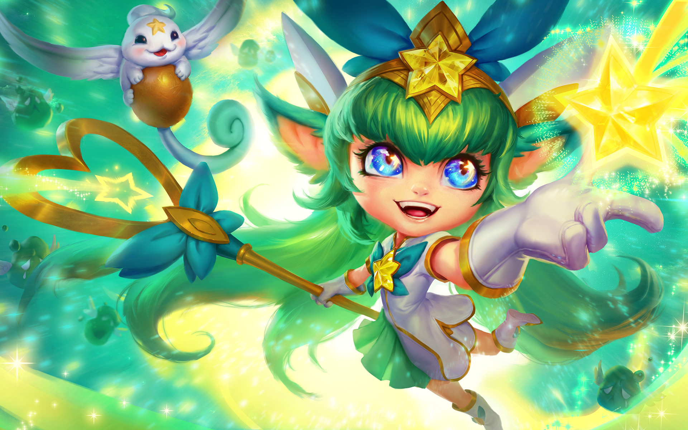

Luxanna Stemmaguarda nasceu em Demacia, um reino de milhões onde habilidades mágicas são vistas com medo e desconfiança.
Capaz de dobrar a luz à sua vontade, ela cresceu quebrando o tabu e sem medo de ser descoberta e exilada.
Ela é a maior do League Of Legend, não deita pra ninguém, é so um Q + E + R e é F pro inimigo.
Ela é lacre mesmo, barbariza mesmo e é sobre. TEM QUE ACEITAR!!!
Ahri
A ligação de Ahri com a magia do mundo espiritual é inata.
Ela é uma vastaya com traços de raposa, capaz de manipular as emoções de sua presa e consumir sua essência, devorando também as memórias e as percepções de cada alma absorvida.
Outrora uma predadora poderosa, porém rebelde, Ahri agora viaja pelo mundo em busca de vestígios dos seus antepassados enquanto tenta substituir as memórias roubadas por novas de sua própria autoria.
Lulu

A maga yordle Lulu é conhecida por conjurar ilusões de sonhos e criaturas fantasiosas enquanto vaga por Runeterra com seu silfo companheiro, Pix.
Lulu transforma a realidade por capricho, distorcendo o que ela vê como restrições desse banal reino físico.
Apesar de alguns considerarem sua magia no mínimo anormal, e no máximo perigosa, ela acredita que todos merecem um toque de encanto.
Kayle
Nascida de um Aspecto targonense no auge das Guerras Rúnicas, Kayle honrava o legado de sua mãe lutando por justiça com asas de chamas divinas.
Ela e sua irmã gêmea, Morgana, foram as protetoras de Demacia por muitos anos, até Kayle se desiludir com as repetidas falhas dos mortais e abandonar de vez o plano mortal.
Mesmo assim, reza a lenda que ela continua punindo malfeitores com suas espadas de fogo, e muitos esperam que um dia ela retorne…